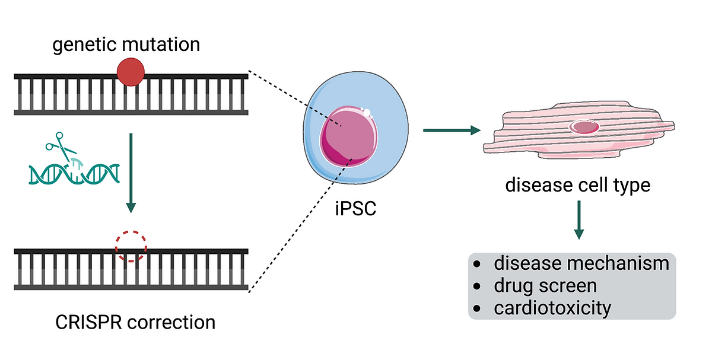
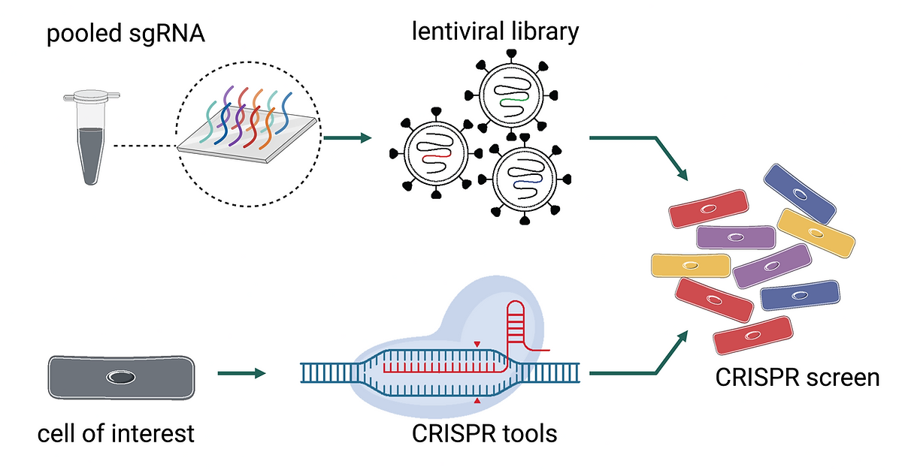
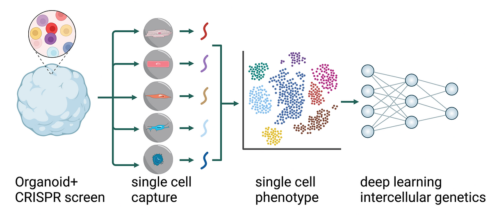

Our Research
At the core of our lab's work are Induced Pluripotent Stem Cells (iPSCs) and CRISPR screening technology. Reprogram cells to repair damaged heart tissue or even prevent cardiovascular diseases before they strike —it's what we're working on right now! Using iPSCs, we're creating patient-specific models to delve deep into the mysteries of the heart. And with the high-throughput of CRISPR screening, we're identifying novel drug targets faster than ever before. Our lab is working on the following areas:

Disease Modeling

CRISPRi/a Screening

Perturb-seq in Organoid